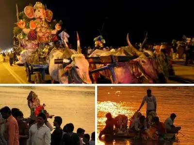
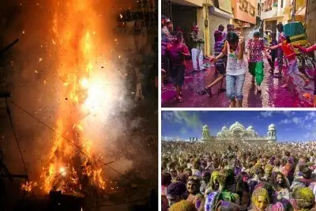
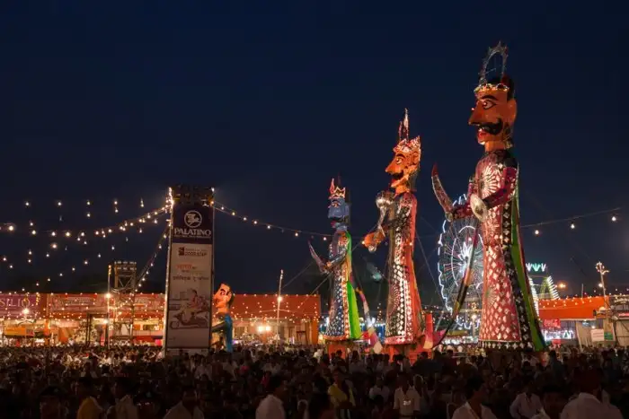
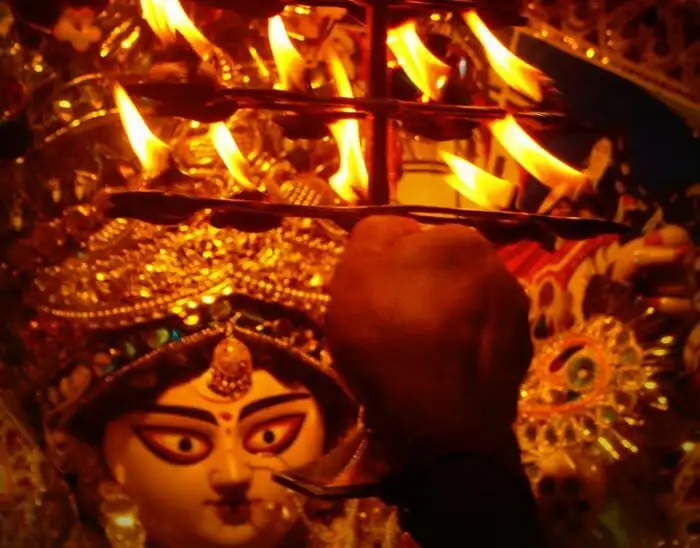
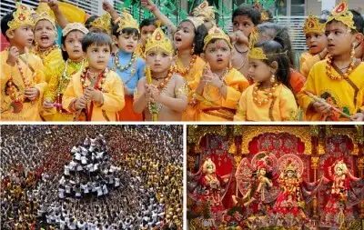
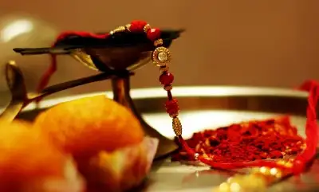

Indian Festivals Calendar 2022
Diwali
Ganesh Chaturthi Holi Dushara Durga Puja janmasthmi
Here is a list of religious and national festivals of India that is celebrated in the country with much gusto and fervor. Plan your holidays around these festivals if you wish to explore the vibrant culture of India.
| Month | Festival | Date (2022) | Day |
|---|---|---|---|
| November | Diwali | 4th November | Thursday |
| August | Ganesh Chaturthi | 10th September | Friday |
| March | Holi | 29th March | Monday |
| October | Dussehra | 30th October | Friday |
| October | Durga Puja | 15th October | Friday |
| August | Janmashtmi | 12th August | Wednesday |
| August | Rakshabandhan | 22nd August | Sunday |
1. Diwali: The Grand Festival Of Lights (4 November, Thursday)

Also known as the festival of colours, Holi is one of the famous festivals of India, celebrated with a lot of fervour across the country. On the eve of Holi, people make huge Holika bonfires and sing and dance around it. On the day of Holi, the famous festival of Indian states, people gather in open areas and apply dry and wet colors of multiple hues to each other, with some carrying water guns and colored water-filled balloons. It tops the charts of 10 famous festivals in India as it is celebrated all across the world with happiness. Significance: It signifies the victory of good (Prince Prahlad) over evil (Holika) and the arrival of spring. Key attractions: Holika bonfire, playing with colors, and bhang thandai When: Full moon (Purnima) of the Phalgun month of the Hindu lunisolar calendar, which corresponds to the month of March of the Gregorian calendar Where: Almost all over the country; most vibrant celebrations can be seen in North Indian states Holi 2022: 18th March (Friday) Things To Do: Holika bonfires and sing and dance around it, play with colors, eat sweets esp. Gujiya
2.Ganesh Chaturthi: Eleven Days Of Pampering Lord Ganesha! (10th September, Friday)
Ganesh Chaturthi, another one of the important Hindu religious festivals of India , is a 10-day affair of colorful festivities. Huge handcrafted Ganesh idols are installed in homes or outdoors, in public pandals. Pujas are performed in the morning and the evening. The last day is the day of Visarjan – immersion of an idol in a water body. Cultural activities of singing, dancing, and theater, and free medical and blood donation camps are held. Significance: It’s the birthday of Lord Ganesha, the elephant-headed God. Key attractions: The beautifully crafted life size idols of Ganesha, and the immersion ceremony When: The 4th day of the first fortnight (Shukla Chaturthi) in the month of Bhadrapada of the Hindu lunisolar calendar, which corresponds to August or September of the Gregorian calendar Where: Celebrated in the states of Maharashtra and Andhra Pradesh with fervor and gaiety Ganesh Chaturthi 2022: 31st August (Wednesday) Things To Do: Indulge in cultural activities, be a part of visarjan ceremony
3.Holi: The Vibrant Festival Of Colours (29th March, Monday)
Also known as the festival of colours, Holi is one of the famous festivals of India, celebrated with a lot of fervour across the country. On the eve of Holi, people make huge Holika bonfires and sing and dance around it. On the day of Holi, the famous festival of Indian states, people gather in open areas and apply dry and wet colors of multiple hues to each other, with some carrying water guns and colored water-filled balloons. It tops the charts of 10 famous festivals in India as it is celebrated all across the world with happiness. Significance: It signifies the victory of good (Prince Prahlad) over evil (Holika) and the arrival of spring. Key attractions: Holika bonfire, playing with colors, and bhang thandai When: Full moon (Purnima) of the Phalgun month of the Hindu lunisolar calendar, which corresponds to the month of March of the Gregorian calendar Where: Almost all over the country; most vibrant celebrations can be seen in North Indian states Holi 2022: 18th March (Friday) Things To Do: Holika bonfires and sing and dance around it, play with colors, eat sweets esp. Gujiya
4.Dussehra: Witness The Triumph Of Good Over Evil (15th October, Friday)
Dussehra, also referred to as Vijayadashami, is also among the most famous festivals of India in Hindu religion. It is celebrated in different forms of countrywide. Ramlila (enactment of scenes from Ramayana) is held everywhere for 10 days. It’s culminated with “Ravan Dahan” – the burning of huge effigies of Ravana, Meghnath, and Kumbhkaran which is a real spectacle to see. While in Mysore, a colorful procession is taken out, in Kullu it is celebrated for 10 days welcoming their mountain deities in the valley. The Mysore Palace is lit like a bride and the atmosphere is filed with the music of drums. It is a spectacle to not miss on your trip to the city of royals. It is one of the most religious festivals of India. Significance: It celebrates the death of the demon king Ravana at the hands of Lord Rama. Key attractions: Hustle bustle of the decorated markets, Ram-Leela acts, and the big event of the burning of effigies of Ravana, Meghnath, and Kumbhkaran When: 10th day of the month of Ashwin according to the Hindu lunisolar calendar, which corresponds to September or October of the Gregorian calendar Where: Pan India Dussehra 2022: 5th October (Wednesday) Things To Do: Visit Dussehra celebrations, attend ravan dahan, visit prominent temples to glance celebrations
5.Durga Puja: Of Prosperity, Goodness, And Devotion ( Begins On 15th October, Friday)
One of the important Hindu festivals of India, Durga Puja is celebrated with grandeur by Bengalis, throughout the country and is ranked as one of the top in the list of religious festivals of India. The 10 days of fast, feast, and worship of Goddess Durga are accompanied by cultural songs, dances, and dramas. Huge and beautiful Durga idols are made and placed in specially made artistic Pandals(canopies). People dress in traditional wear and go around the pandal-hopping, praying, and feasting. Significance: It commemorates Lord Rama’s invocation of Goddess Durga before going to war with the demon king Ravana. Key attractions: Plush pandals, incredibly beautiful ten armed Durga idols, and the puja When: 10th day of Ashwina Shukla paksha according to the Hindu lunisolar calendar, which corresponds to September or October of the Gregorian calendar Where: Kolkata and the metros are the best places to be in India during Durga Puja celebrations Durga Puja 2022: 1st October (Saturday) Things To Do: Visit Durga Puja pandals to catch the true vibe of this celebration
6.Krishna Janmashtami: The Birth Of The Mighty & Mischievous (30th August, Monday)
Janmashtami is again a beautiful one among the most important religious festivals of India. Janmashtami celebrations in Mathura and Vrindavan are very popular. People fast throughout the day and break it with a special meal after dusk which makes it one of the important in the list of festivals of India. Visiting temples, praying, dancing, and singing bhajans (hymns) at midnight is a part of the celebrations of the birth of Lord Krishna. Often, small children dress up like Lord Krishna on this day. Images and picturization of Krishna’s life story are depicted in the “jhankis” in temples. It is one of the popular festivals of India. Significance: It is the annual celebration of the birthday of Lord Krishna. Key attractions: The Janmashtami puja and festivities in the temples and the jhaankis of Lord Krishna When: The 8th day (Ashtami) of the Krishna Paksha (dark fortnight) of the month of Bhadrapada according to the Hindu lunisolar calendar, which corresponds to August or September of the Gregorian calendar Where: Celebrated by the Hindu community all over, but the festivities at Mathura and Vrindavan are very popular Janmashtami 2022: 18th August (Thursday) – 19th August (Friday) Things To Do: Visit Krishna temples and attend special puja that includes bhajans and jhankis
7.Raksha Bandhan: Strengthening The Bond Of Kinship (22nd August, Sunday)
One of the famous festivals in the list of festivals of India, Rakhi is celebrated among Hindu. Signifying the brother-sister bonding, during Rakhi, the sister performs Aarti (prayer), applies tilak, and ties rakhi (a sacred thread) on the brother’s wrist wishing his well being. The brother, in return, vows to protect the sister. Another festival which has a strong similarity to Rakhi is Bhai Dooj which comes just after Diwali. Significance: It symbolizes the strong bonding of a brother and sister. Key attractions: The ritual of Rakhi and the brightly decked up markets showcasing a colourful variety of rakhis and sweets When: The full moon day of Shravana month of the Hindu lunisolar calendar, which corresponds to August of the Gregorian calendar Where: Particularly in North, Central and West India Raksha Bandhan 2022: 11th August (Thursday) Things To Do: Celebrate the day with your siblings